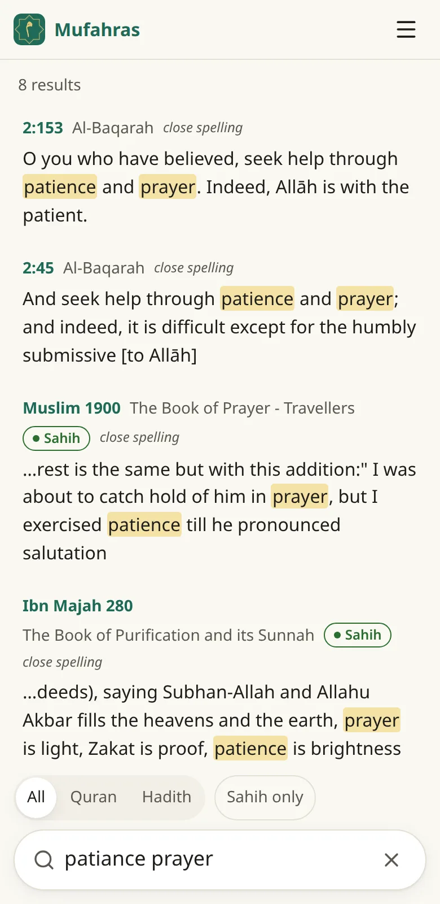
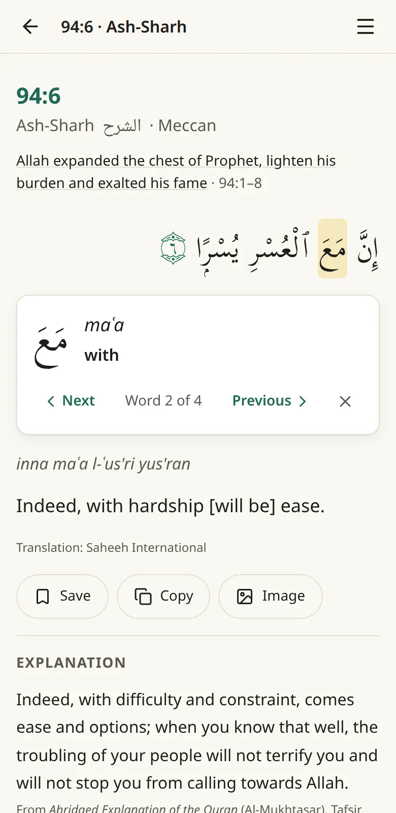
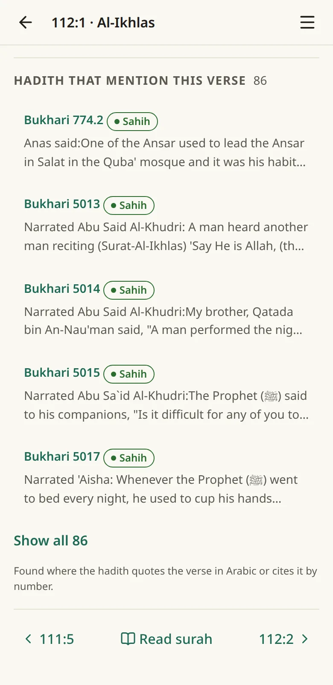
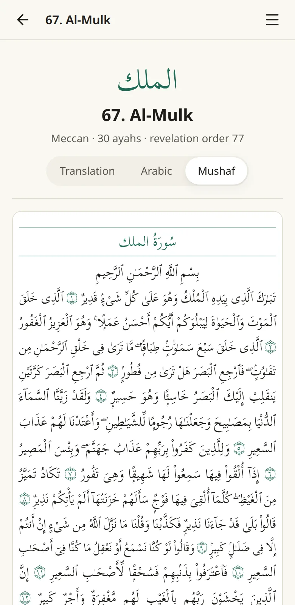
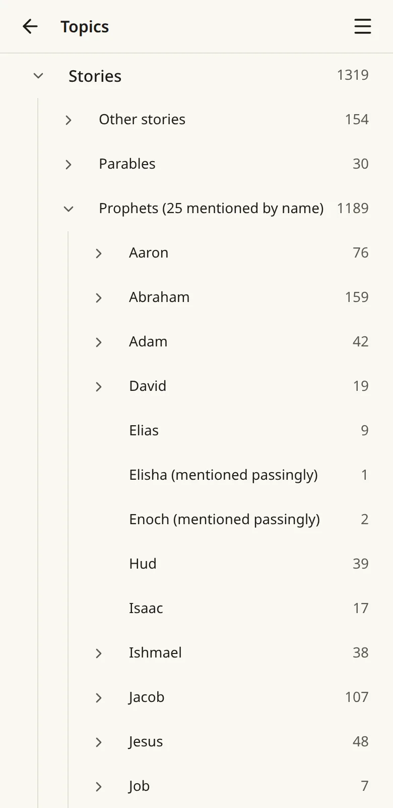
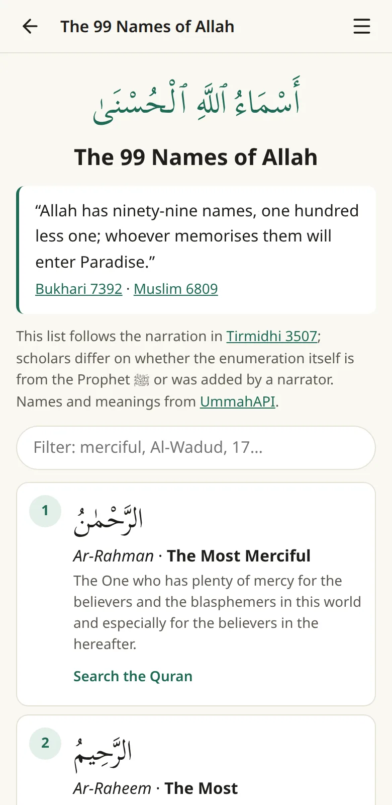
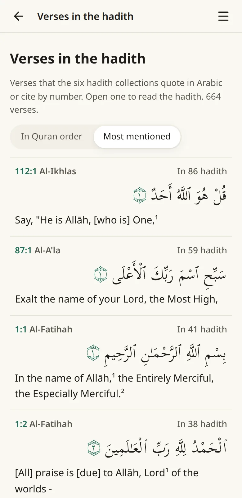
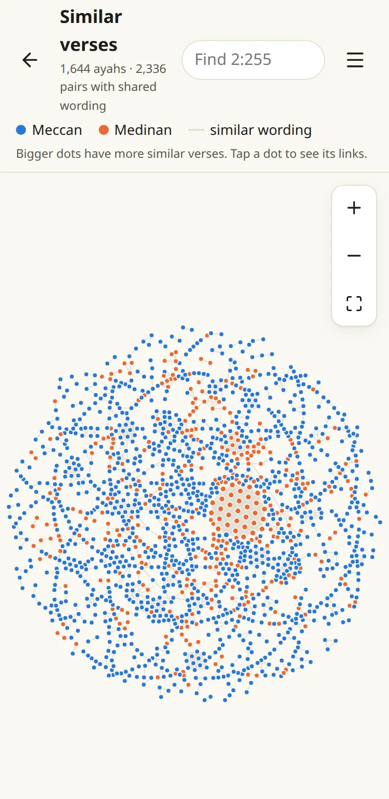
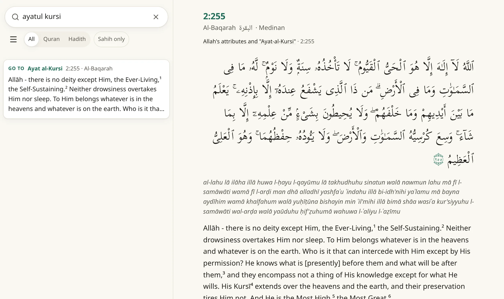

The name
Mufahras means indexed
For generations, the way to find a verse from a word you remembered was al-Muʿjam al-Mufahras li-Alfāẓ al-Qurʾān al-Karīm, the concordance compiled by Muḥammad Fuʾād ʿAbd al-Bāqī, which lists every word of the Quran with the verses it appears in. Its sister work did the same for hadith.
Mufahras carries that tradition into your pocket: an index of the Quran and the Sunnah that answers as you type.
وَلَقَدْ يَسَّرْنَا ٱلْقُرْءَانَ لِلذِّكْرِ فَهَلْ مِن مُّدَّكِرٍۢ
Search
A few words you remember are enough
Words in any order, half-remembered, with mistakes. Mufahras reads the Arabic, the English and the transliteration of every verse, and the English and Arabic of every hadith.

Search by meaning beta
Or describe what you're looking for
The verse you're thinking of may not use the word you remember. Switch on Search by meaning and Mufahras also shows the texts closest in meaning to what you typed: “dealing with anxiety” finds with hardship will be ease, though it never uses the word.
English only. It runs on your device, after a one-time download of about 40 MB, and then works offline too. It only finds the texts; it never writes or summarizes anything.
By meaning
-
94:6 Ash-Sharh
إِنَّ مَعَ ٱلْعُسْرِ يُسْرًۭا
Indeed, with hardship [will be] ease.
-
Bukhari 6369 Invocations
The Prophet (ﷺ) used to say, “O Allah! I seek refuge with You from worry and grief, from incapacity and laziness…”
أَوْ زِدْ عَلَيْهِ وَرَتِّلِ ٱلْقُرْءَانَ تَرْتِيلًا
Reading
Every verse, opened up
Open a result and it's all there: the verse with its neighbours, and everything that helps you understand it.



- The explanation from Al-Mukhtasar, and the theme of the passage
- Its topics, and similar verses with the shared words marked
- Phrases it shares with other verses (mutashabihat)
- Every hadith with its book, chapter, Arabic and each scholar's grading
أَفَلَا يَتَدَبَّرُونَ ٱلْقُرْءَانَ أَمْ عَلَىٰ قُلُوبٍ أَقْفَالُهَآ
Browsing
Room to wander

Topics
As a tree you can open: Stories › Prophets › Moses.

The 99 Names of Allah
With their meanings and the verses they come from.

Verses in the hadith
Every verse the six collections quote, most mentioned first.

Similar verses
A graph of the verses that share wording, to explore.
Also: all 114 surahs, the six hadith collections chapter by chapter, the duas of the Quran, the sajdah verses, repeated phrases and well-known names.
Free, private, offline
Yours, on your device
-
Nothing to sign up for
No accounts, no ads, no tracking, no analytics, no cookies. It's free.
-
Your searches stay with you
They're answered by code on your phone or computer, never sent anywhere. Bookmarks and history live only on your device.
-
Works without a signal
After the first visit it opens and searches offline: on a flight, underground, anywhere. One tap stores the rest.
Install it like an app
- iPhone
- Share in Safari, then Add to Home Screen
- Android
- Install app in Chrome's menu. Then share a quote from any app to Mufahras to find its source.
- Desktop
- The install icon in the address bar
On a desktop
Side by side, and the keyboard does the rest

- / search
- ↑↓ choose
- ←→ previous, next
- B bookmark
- W word by word
- ? the keys for any screen
Four colour themes, Paper, Sepia, Dusk and Night, with text and Arabic sizes. And Sakinah mode: one switch for just search and reading.
The Prophet (ﷺ) said, “The best among you (Muslims) are those who learn the Qur’an and teach it.”
Sahih al-Bukhari 5027
Find what you were looking for
If it benefits you, please remember us in your duʿāʾ.